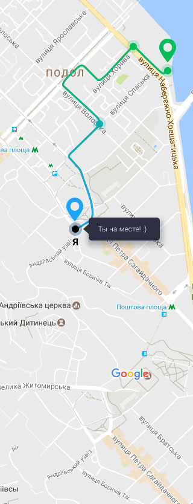

Выбрать другую экскурсию

Время
3 ч 30 м
Расстояние
2.8 км
Finish
Маршрут экскурсии
Колоритный Андреевский спуск
Вуснейшая выпечка в кафе “Компот”
Загадочная набережная Днепра
Прогулка на катере “Речной круиз” вдоль реки Днепр